The wavetable oscillator of Section 2.1, which we extended in Section 2.2 to encompass grabbing waveforms from arbitrary wavetables such as recorded sounds, may additionally be extended in a complementary way, that we'll refer to as timbre stretching, for reasons we'll develop in this section. There are also many other possible ways to extend wavetable synthesis, using for instance frequency modulation and waveshaping, but we'll leave them to later chapters.
The central idea of timbre stretching is to reconsider the idea of the wavetable oscillator as a mechanism for playing a stored wavetable (or part of one) end to end. There is no reason the end of one cycle has to coincide with the beginning of another. Instead, we could ask for copies of the waveform to be spaced with alternating segments of silence; or, going in the opposite direction, the waveform copies could be spaced more closely together so that they overlap. The single parameter available in Section 2.1--the frequency--has been heretofore used to control two separate aspects of the output: the period at which we start new copies of the waveform, and also the length of each individual copy. The idea of timbre stretching is to control the two independently.
Figure 2.9 shows the result of playing a wavetable in three ways.
In each case the output waveform has period 20; in other words, the output frequency
is 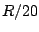 if  is the output sample rate. In part (a) of the figure, each
copy of the waveform is played over 20 samples, so that the wave form fits
exactly into the cycle with no gaps and no overlap. In part (b), although the
period is still 20, the waveform is compressed into the middle half of the
period (10 samples); or in other words, the
duty cycle--the relative amount of time the waveform fills the
cycle--equals 50 percent. The remaining 50 percent of the time, the output
is zero.
is the output sample rate. In part (a) of the figure, each
copy of the waveform is played over 20 samples, so that the wave form fits
exactly into the cycle with no gaps and no overlap. In part (b), although the
period is still 20, the waveform is compressed into the middle half of the
period (10 samples); or in other words, the
duty cycle--the relative amount of time the waveform fills the
cycle--equals 50 percent. The remaining 50 percent of the time, the output
is zero.
| 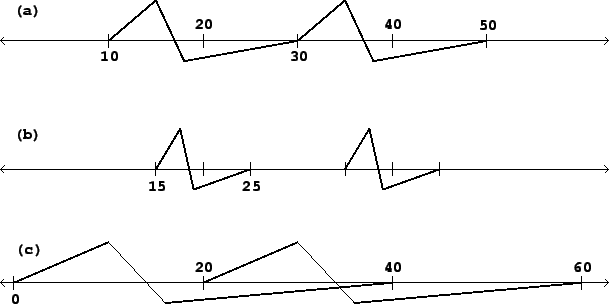 |
In part (c), the waveform is stretched to 40 samples, and since it is still repeated every 20 samples, the waveforms overlap two to one. The duty cycle is thus 200 percent.
Suppose now that the 100 percent duty cycle waveform has a Fourier series
(Section 1.7) equal to:
We would like to relate this to the Fourier series of the other two waveforms
in the example, in order to show how changing the duty cycle changes the
timbre of the result. For the 50 percent duty cycle case (calling the
signal 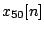), we observe that the waveform, if we replicate it out
of phase by a half period and add the two, gives exactly the original waveform
at twice the frequency:
Similarly, and 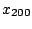 are related in exactly the same way:
We see that squeezing the waveform by a factor of 2 has the effect of
stretching the Fourier series out by two, and on the other hand stretching the
waveform by a factor of two squeezes the Fourier series by two. By the same
sort of argument, in general it turns out that stretching the waveform by a
factor of any positive number  squeezes the overtones, in frequency, by the
reciprocal 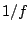--at least approximately, and the approximation is at least
fairly good if the waveform ``behaves well" at its ends.
(As we'll see later, the waveform can always be forced to behave at least
reasonably well by enveloping it as in Figure 2.7.)
squeezes the overtones, in frequency, by the
reciprocal 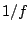--at least approximately, and the approximation is at least
fairly good if the waveform ``behaves well" at its ends.
(As we'll see later, the waveform can always be forced to behave at least
reasonably well by enveloping it as in Figure 2.7.)
Figure 2.10 shows the spectra of the three waveforms--or in other words the one waveform at three duty cycles--of Figure 2.9. The figure emphasizes the relationship between the three spectra by drawing curves through each, which, on inspection, turn out to be the same curve, only stretched differently; as the duty cycle goes up, the curve is both compressed to the left (the frequencies all drop) and amplified (stretched upward).
| 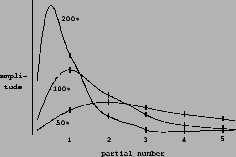 |
The continuous curves have a very simple interpretation. Imagine squeezing the waveform into some tiny duty cycle, say 1 percent. The contour will be stretched by a factor of 100. Working backward, this would allow us to interpolate between each pair of consecutive points of the 100 percent duty cycle contour (the original one) with 99 new ones. Already in the figure the 50 percent duty cycle trace defines the curve with twice the resolution of the original one. In the limit, as the duty cycle gets arbitrarily small, the spectrum is filled in more and more densely; and the limit is the ``true" spectrum of the waveform.
This ``true" spectrum is only audible at suitably low duty cycles, though. The 200 percent duty cycle example actually misses the peak in the ideal (continuous) spectrum because the peak falls below the first harmonic. In general, higher duty cycles sample the ideal curve at lower resolutions.
Timbre stretching is an extremely powerful technique for generating
sounds with systematically variable spectra. Combined with the possibilities of
mixtures of waveforms (Section 2.1) and of snatching
endlessly variable waveforms from recorded samples (Section
2.2), it is possible to generate all sorts of sounds.
For example, the block diagram of Figure 2.7 gives us a
way to to grab and stretch timbres from a recorded wavetable. When the
``frequency" parameter  is high enough to be audible as a pitch, the
``size"
parameter 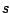 can be thought of as controlling timbre stretch, via the
formula 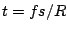 from Section 2.2, where we now
reinterpret
is high enough to be audible as a pitch, the
``size"
parameter 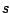 can be thought of as controlling timbre stretch, via the
formula 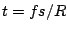 from Section 2.2, where we now
reinterpret  as the factor by which the timbre is to be stretched.
as the factor by which the timbre is to be stretched.